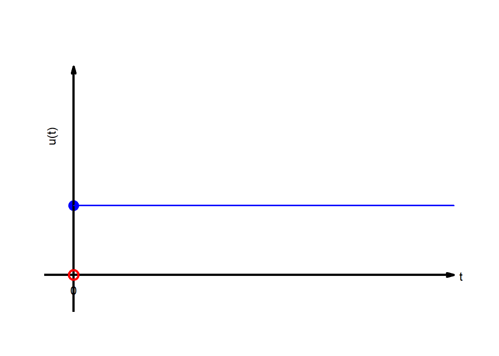
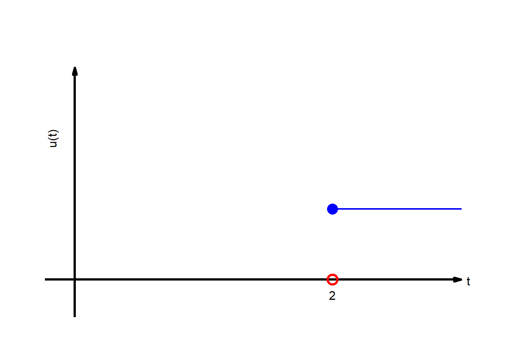
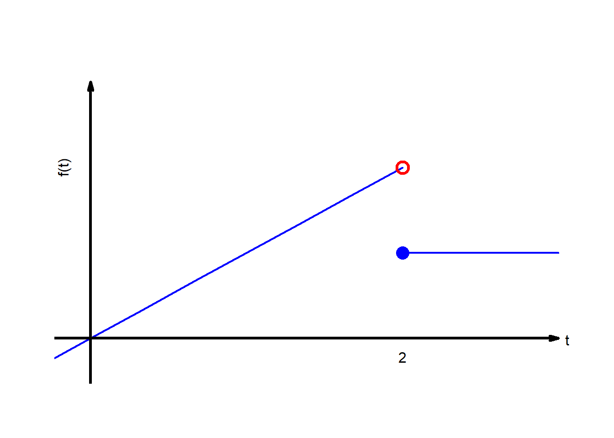
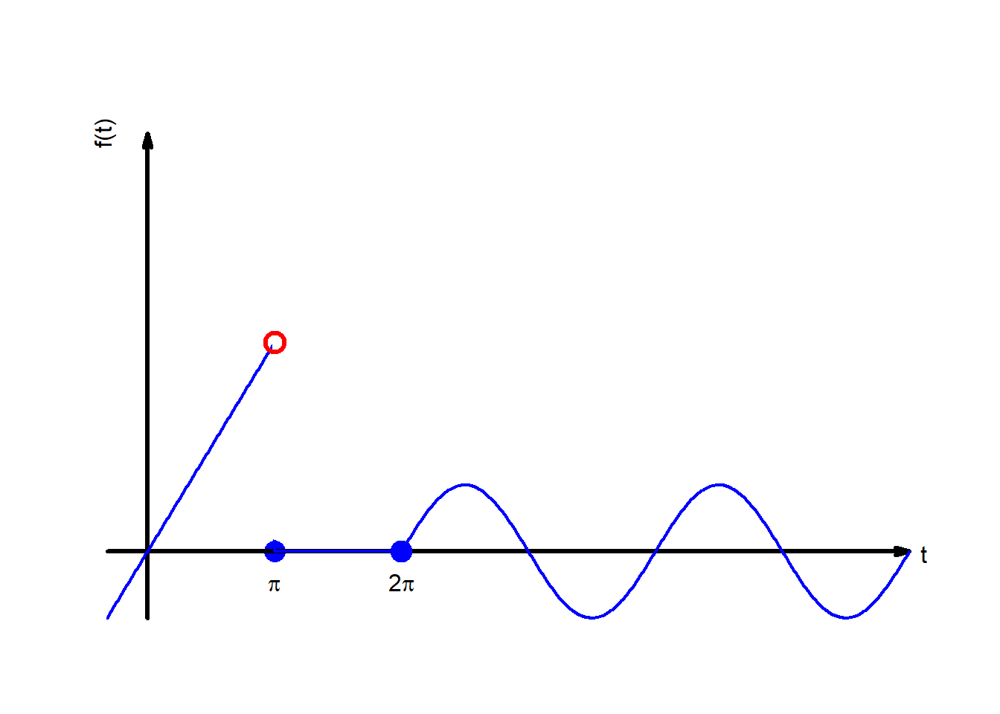

8 L25: Solving odes with piecewise continuous forcing functions (8.4)
8.1
NoteDefinition
The unit step function is defined to be
\[u(t)= 0\qquad ,\quad t< 0 \] \[\qquad=1\qquad ,\quad t\geq 0\]
8.1.1 Example
TipExample
Sketch: \[u(t-2)\]
CautionSolution:

8.1.2 Example 2
TipExample
Sketch \[f(t)=t+u(t-2)(1-t)\]
CautionSolution:

8.1.3 Example 3
TipExample
Sketch1 \[f(t)=(1-u(t-\pi))t+u(t-2\pi)\sin t\]
CautionSolution:

8.2 Theorem: Laplace of the product between displace unit function and a displaced function
NoteTheorem
Theorem 8.1 If \(F(s)=\mathscr{L}\{f(t)\}\) exists for \(s>C\) and if \(a>0\), then
\[\boxed{\mathscr{L}\{u(t-a)f(t-a)\}=e^{-as}\mathscr{L}\{f(t)\}=e^{-as}F(s)},\qquad s>C \tag{8.1}\]
CautionProof:
\[\mathscr{L}\{u(t-a)f(t-a)\}=\int_0^\infty e^{-st} u(t-a)f(t-a)\,dt\]
\[=\int_a^\infty e^{-st} f(t-a)\,dt\]
Change of variables: \[u=t-a\rightarrow u(a)=0\]
\[=\int_0^\infty e^{-s(u+a)} f(u)\,du\]
\[=e^{-sa}\int_0^\infty e^{-su} f(u)\,du\]
\[=e^{-as}F(s)\] \[=e^{-as}\mathscr{L}\{f(t)\}\] \[\hspace{2in}\square\]
8.2.1 Example 1
TipExample
\[\mathscr{L}\{u(t-a)\}=?\]
CautionSolution:
\[\mathscr{L}\{u(t-a)\}=\mathscr{L}\{u(t-a)\cdot (t-a)^0\}\] \[=e^{-sa}\mathscr{L}\{t^0\}\] \[=e^{-sa}\frac{1}{s}\]
8.2.2 Example 2
TipExample
\[\mathscr{L}\{u(t-a)t\}=?\]
CautionSolution:
\[\mathscr{L}\{u(t-a)t\}=\mathscr{L}\{u(t-a)(t-a)\}+a\mathscr{L}\{u(t-a)\}\]
\[=e^{-sa}\mathscr{L}\{t\}+ae^{-sa}\frac{1}{s}\] \[=e^{-sa}\frac{1}{s^2}+ae^{-sa}\frac{1}{s}\]
8.2.3 Example 3
TipExample
Solve: \[ y'' + 4y = \begin{cases} 0, & 0 \le t < \pi \\ \sin t, & t \ge \pi \end{cases}, \quad y(0) = 0, \quad y'(0) = 1 \]
CautionSolution:
Step 1: Express the forcing function using the unit step function
We rewrite the right-hand side as a single expression using the Heaviside (unit step) function \(u(t - \pi)\):
\[ y'' + 4y = \sin t \cdot u(t - \pi) \]
Step 2: Take Laplace Transforms
Let \(Y(s) = \mathcal{L}\{y(t)\}\). Then:
- \(\mathcal{L}\{y''(t)\} = s^2 Y(s) - s y(0) - y'(0) = s^2 Y(s) - 1\)
- \(\mathcal{L}\{4y(t)\} = 4Y(s)\)
So the left-hand side becomes:
\[ s^2 Y(s) - 1 + 4Y(s) \]
Now for the right-hand side:
- \[\mathcal{L}\{\sin t \cdot u(t - \pi)\} = \mathcal{L}\{-\sin(t-\pi) \cdot u(t - \pi)\}\]
Then
\[ \mathcal{L}\{\sin t \cdot u(t - \pi)\} = -e^{-\pi s} \cdot \mathcal{L}\{\sin t\} = -e^{-\pi s} \cdot \frac{1}{s^2 + 1} \]
Step 3: Laplace Equation
Putting it all together:
\[ s^2 Y(s) - 1 + 4Y(s) = -\frac{e^{-\pi s}}{s^2 + 1} \]
\[ (s^2 + 4)Y(s) = 1 - \frac{e^{-\pi s}}{s^2 + 1} \]
\[ Y(s) = \frac{1}{s^2 + 4} - \frac{e^{-\pi s}}{(s^2 + 4)(s^2 + 1)} \]
Step 4: Inverse Laplace Using Partial Fractions
We already know:
\[ \mathcal{L}^{-1}\left\{\frac{1}{s^2 + 4}\right\} = \frac{1}{2} \sin(2t) \]
Now consider:
\[ \frac{1}{(s^2 + 4)(s^2 + 1)} = \frac{As + B}{s^2 + 1} + \frac{Cs + D}{s^2 + 4} \]
Multiply both sides by \((s^2 + 4)(s^2 + 1)\):
\[ 1 = (As + B)(s^2 + 4) + (Cs + D)(s^2 + 1) \]
Now expand both sides:
- \((As + B)(s^2 + 4) = As^3 + 4As + Bs^2 + 4B\)
- \((Cs + D)(s^2 + 1) = Cs^3 + Cs + Ds^2 + D\)
Add everything:
\[ 1 = (A + C)s^3 + (B + D)s^2 + (4A + C)s + (4B + D) \]
Match coefficients:
\[ \begin{aligned} s^3 &: A + C = 0 \\ s^2 &: B + D = 0 \\ s^1 &: 4A + C = 0 \\ s^0 &: 4B + D = 1 \end{aligned} \]
From \(A + C = 0 \Rightarrow C = -A\)
Substitute into \(4A + C = 0 \Rightarrow 4A - A = 0 \Rightarrow A = 0 \Rightarrow C = 0\)
Then from \(B + D = 0 \Rightarrow D = -B\)
And \(4B + D = 1 \Rightarrow 4B - B = 1 \Rightarrow 3B = 1 \Rightarrow B = \frac{1}{3}, D = -\frac{1}{3}\)
So:
\[ \frac{1}{(s^2 + 4)(s^2 + 1)} = \frac{1/3}{s^2 + 1} - \frac{1/3}{s^2 + 4} \]
Note:
Maxima can do this in one line of code:
(%i1) eqn: 1/((s^2+1)*(s^2+4))$
(%i2) partfrac(eqn,s);(%o2) 1/(3*(s^2+1))-1/(3*(s^2+4))Now, going back to \(Y(s)\):
\[ Y(s) = \frac{1}{s^2 + 4} - e^{-\pi s} \left( \frac{1}{3(s^2 + 1)} - \frac{1}{3(s^2 + 4)} \right) \]
Step 5: Inverse Laplace Transform
\[ y(t) = \mathcal{L}^{-1}\left\{ \frac{1}{s^2 + 4} \right\} - \mathcal{L}^{-1}\left\{ e^{-\pi s} \left( \frac{1}{3(s^2 + 1)} - \frac{1}{3(s^2 + 4)} \right) \right\} \]
Use the time-shifting property:
- \(\mathcal{L}^{-1} \left\{ \frac{1}{s^2 + 1} \right\} = \sin t\)
- \(\mathcal{L}^{-1} \left\{ \frac{1}{s^2 + 4} \right\} = \frac{1}{2} \sin 2t\)
\[ \mathcal{L}^{-1} \left\{ e^{-\pi s} \cdot F(s) \right\} = u(t - \pi) \cdot f(t - \pi) \]
So final solution:
\[ \boxed{ y(t) = \frac{1}{2} \sin 2t - u(t - \pi) \left[ \frac{1}{3} \sin(t - \pi) - \frac{1}{6} \sin 2(t - \pi) \right] } \]
8.3 References
work by each interval↩︎